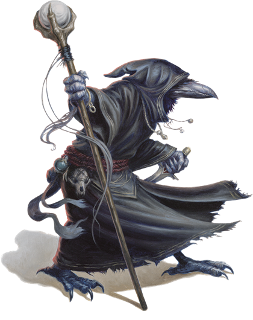
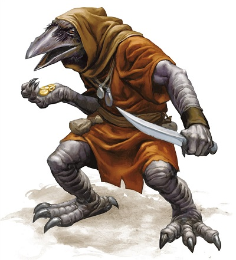

Kenku
Hommes-oiseaux bipèdes qui ont perdu leur faculté de voler suite à une ancestrale punition, les kenku errent dans le monde comme des vagabonds, en marge des villes construites par les humains.
Physiologie
Les kenku ressemblent à un corbeau humanoïde avec un grand bec sombre et deux bras aux mains griffues. Ils revêtent généralement des habits humains de couleur sombre, mesurent entre 1,50 m et 1,60 m de haut et pèsent de 40 à 55 kilos. Leur plumage qui couvre la tête et le torse est majoritairement brun, avec parfois quelques traces blanches sur le visage, mais leurs jambes et leurs bras sont dépourvus de plumes. Leurs yeux sont jaune ou noir. Bien qu'ils ressemblent beaucoup à des oiseaux, ils n'ont aucune aile et sont incapables de voler, capacité qu'ils rêvent toutefois tous de retrouver et qui virent souvent à l'obsession pour eux. Généralement un peu moins forts que les humains, ils sont par contre plus agiles qu'eux.
Un kenku est incapable de parler mais peut reproduire des sons qu'il a entendus et comprend le commun. Ils sont également doués pour le mime et s'expriment souvent par signes. Ils aiment aussi se déguiser et se faire passer pour des humains, bien que leur physionomie les force souvent à arborer un nez plus long que la moyenne.
La lumière du jour ne leur fait pas mal et ils ne voient pas mieux dans le noir qu'un humain, mais un kenku préfère s'aventurer en ville à la tombée de la nuit plutôt qu'en pleine journée, sa coloration l'aidant à être encore plus discret.
Cycle de vie
En ce qui concerne leur reproduction, une femelle pond entre 2 et 4 œufs qui éclosent au bout de 60 jours (un œuf de kenku peut se vendre jusqu'à 250 pièces d'or). Les nouveau-nés, dénués de plumes, grandissent alors rapidement, mais seul la moitié d'entre eux en moyenne survivront aux premiers mois. Au bout de moins d'un an, leur plumage s'est formé. Puis ils commencent à acquérir les talents dont ils auront besoin une fois adulte, après leur douzième année, lorsqu'ils quitteront le nid pour rallier un petit groupe de kenku dont l'état d'esprit est similaire au leur. Notez que si les jeunes kenku sont souvent téméraires, leurs aînés sont plus rusés et plus réservés. Leur espérance de vie n'est que de 60 ans.
Alimentation
Kenku are feathered humanoids that wander the world as vagabonds, driven by greed. They can perfectly imitate any sound they hear.
Les kenku sont omnivores et mangent tous les détritus et les déchets que l'on peut trouver dans une ville. Ils aiment particulièrement la charogne et les fruits ou les légumes pourris. La famine est toutefois la première cause de décès chez les kenku, suivie par la maladie.
Origines
Avant de tomber en disgrâce, les kenku servaient un maître, dont le nom a depuis été oublié, sur un autre plan d'existence. Dotés d'ailes, ils effectuaient pour lui des missions discrètes et silencieuses. Jusqu'au jour où les kenku en vinrent à convoiter sa parole et lui volèrent le secret du langage dans sa bibliothèque. Pouvant maintenant parler, ils se servirent rapidement de leur nouvelle capacité pour mendier et amasser de l'argent ainsi que tout ce qui brillait. Mais lorsqu'il se rendit compte de ce qu'ils avaient fait, leur maître entra dans une colère noire et les dépouilla à jamais de leurs ailes et de la parole en réponse à leur cupidité, avant de les renvoyer sur le plan matériel.
Habitat
All kenku pine for the ability to fly, and thus the punishments they mete out to one another often involve false wings, such as heavy wings of wood borne as a mark of shame. As a final, tragic reminder of the wings they once had, kenku carry out executions by hurling their condemned from tall buildings or cliffs.
En raison de leur penchant pour les affaires louches, les kenku servent souvent d'hommes de main, de voleurs, d'espions ou d'assassins. Leur plus grande guilde connue, composée de voleurs et d'assassins, est basée à Zazesspur, au Tethyr. On en trouve également dans les régions du Sud étincelant, en Estagund et en Veldorn, notamment à Vaelan où ils luttent contre des gangs de halfelins pour prendre le contrôle des rues de la ville. Les premiers kenku du plan matériel viendraient de Kara-Tur selon la légende.
Société
Les kenku sont ce qu'ils sont à cause de leur cupidité et de leur propension à voler (voir Origines), et ces traits demeurent encore à ce jour dans leur culture. Ils se rassemblent au sein de structures indépendantes semblables à des gangs ou à des clans qu'ils appellent des volées. Grâce à leurs compétences et à leur manque de scrupules, ils prospèrent dans le milieu du crime et gèrent toutes sortes d'affaires illicites. La violence est toutefois rarement leur première option ; ils préfèrent la ruse et les stratagèmes pour parvenir à leurs fins.
Un kenku peut parfois donner l'impression d'être amical et généreux, offrant des trésors aux humains et aux demi-humains, mais ces cadeaux tombent en poussière dès le lendemain. De même, lorsqu'ils donnent des conseils aux humanoïdes, ce n'est que pour mieux les berner. Vicieux en combat, ils sont toutefois lâches par nature et fuient généralement dès qu'une bataille tourne en faveur de leur adversaire. De même, ils n'hésiteront pas à se rendre si cela peut leur permettre de rester en vie. Mais s'ils ont une sinistre réputation qui n'est pas usurpée, les kenku peuvent aussi se révéler être de précieux alliés.
Ils utilisent souvent des épées courtes ou des arcs courts au combat, parfois aussi des dagues ou des frondes, et portent généralement une armure de cuir. Très peu de kenku vénèrent un dieu.
Note : le kenku est présenté en tant que race pour PJ dans le Volo's Guide to Monsters de D&D 5.
Traduit et adapté par blueace